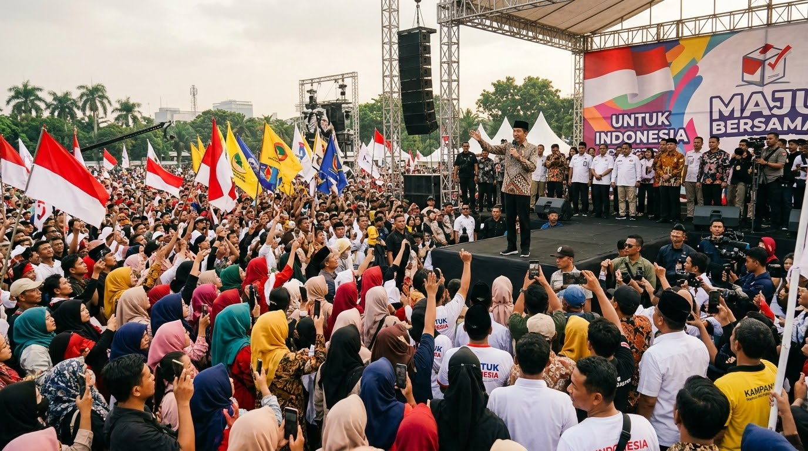

PEMBENAHAN SISTEM DAN BUDAYA MORAL POLITIK INDONESIA

Kehidupan politik suatu bangsa tidak hanya ditentukan oleh bentuk pemerintahan, susunan lembaga negara, dan peraturan yang mengatur penyelenggaraan kekuasaan. Di balik seluruh perangkat tersebut terdapat manusia yang menjalankan kewenangan, membuat keputusan, mengelola kepentingan publik, serta menentukan arah kehidupan bersama. Karena itu, kualitas kehidupan politik sangat dipengaruhi oleh kualitas moral manusia yang berada di dalamnya. Sistem politik yang baik membutuhkan penyelenggara negara yang memiliki integritas, sementara budaya politik yang sehat membutuhkan masyarakat yang memiliki kesadaran dan tanggung jawab dalam menjalankan hak-hak politiknya.
Krisis moral dalam kehidupan politik Indonesia memperlihatkan bahwa pembenahan tidak cukup dilakukan dengan mengganti pejabat, membentuk lembaga baru, atau menyusun peraturan tambahan. Langkah-langkah tersebut dapat diperlukan, tetapi tidak akan menghasilkan perubahan mendasar apabila cara pandang terhadap kekuasaan tetap berorientasi pada kepentingan pribadi dan kelompok. Perubahan kelembagaan harus berjalan bersama perubahan perilaku, pola kepemimpinan, mekanisme pengambilan keputusan, serta kesadaran masyarakat dalam kehidupan demokrasi.
Pembenahan sistem dan budaya moral politik merupakan usaha untuk mengembalikan kehidupan politik kepada tujuan dasarnya, yaitu mengatur kehidupan bersama demi kepentingan bangsa dan negara. Kekuasaan harus ditempatkan sebagai amanah yang mengandung tanggung jawab, lembaga negara harus bekerja berdasarkan kewenangan yang sah, partai politik harus menjalankan fungsi representasi rakyat, dan hukum harus menjadi dasar yang membatasi tindakan setiap pemegang kekuasaan. Seluruh unsur tersebut perlu ditopang oleh budaya politik yang menghargai kejujuran, keadilan, keterbukaan, kesetaraan, dan tanggung jawab.
Pembenahan politik juga tidak dapat dibebankan hanya kepada pemerintah atau elite politik. Masyarakat memiliki kedudukan penting sebagai pemegang kedaulatan rakyat, sedangkan penyelenggara negara memiliki kewajiban untuk menjalankan mandat tersebut secara bertanggung jawab. Hubungan keduanya harus dibangun melalui kepercayaan, keterbukaan, partisipasi, dan pengawasan yang berjalan secara sehat.
Dengan demikian, pembenahan politik Indonesia harus diarahkan pada dua sisi yang saling berkaitan. Pertama, pembenahan sistem untuk memastikan kekuasaan tidak berjalan tanpa batas dan setiap lembaga dapat menjalankan fungsi serta tanggung jawabnya. Kedua, pembenahan budaya moral untuk membentuk cara berpikir dan perilaku politik yang tidak menjadikan kekuasaan sebagai tujuan pribadi, melainkan sebagai sarana pengabdian kepada masyarakat dan bangsa.
1. Kebutuhan Pembenahan Kehidupan Politik.
Pembenahan kehidupan politik merupakan kebutuhan mendasar ketika pelaksanaan kekuasaan tidak lagi sepenuhnya mencerminkan tujuan penyelenggaraan negara. Dalam kehidupan berbangsa, politik seharusnya menjadi sarana untuk mengatur kepentingan bersama, memperjuangkan aspirasi rakyat, menyelesaikan perbedaan, dan mewujudkan keadilan. Namun, ketika politik lebih banyak diarahkan kepada perebutan jabatan, pemeliharaan kekuasaan, dan keuntungan kelompok, fungsi dasarnya dapat mengalami penyimpangan.
Penyimpangan tersebut tidak selalu muncul dalam bentuk pelanggaran hukum yang dapat segera dibuktikan. Sebagian dapat terlihat melalui perilaku politik yang mengabaikan kepentingan masyarakat, keputusan yang tidak didasarkan pada pertimbangan kepentingan umum, atau penggunaan jabatan untuk memperkuat kedudukan kelompok tertentu. Dalam keadaan seperti itu, persoalan moral menjadi bagian penting yang harus diperhatikan karena suatu tindakan politik tidak cukup dinilai hanya dari apakah tindakan tersebut sesuai prosedur, tetapi juga dari tujuan, pertimbangan, dan akibatnya bagi kehidupan masyarakat.
Kebutuhan pembenahan kehidupan politik pertama-tama berangkat dari kesadaran bahwa kekuasaan tidak boleh menjadi tujuan akhir kegiatan politik. Kekuasaan hanya memiliki arti apabila digunakan untuk menjalankan tanggung jawab penyelenggaraan negara. Jabatan publik bukanlah milik pribadi orang yang mendudukinya, melainkan kedudukan yang diperoleh melalui mekanisme konstitusional dan mengandung kewajiban untuk melayani kepentingan masyarakat. Karena itu, setiap penggunaan kewenangan harus dapat dipertanggungjawabkan berdasarkan hukum, kepatutan, dan kepentingan umum.
Apabila kekuasaan dipahami sebagai sarana memperoleh keuntungan, maka berbagai keputusan politik berisiko diarahkan untuk mempertahankan kedudukan dan memperluas pengaruh. Kepentingan masyarakat dapat ditempatkan di belakang kepentingan elite, sedangkan lembaga negara berpotensi kehilangan orientasi pelayanan. Keadaan semacam ini memperlihatkan pentingnya mengembalikan pemahaman mengenai kekuasaan kepada hakikatnya sebagai amanah.
Pembenahan juga dibutuhkan karena kehidupan politik berlangsung dalam hubungan yang kompleks antara pemerintah, lembaga perwakilan, partai politik, aparat negara, dunia usaha, organisasi masyarakat, dan warga negara. Setiap unsur memiliki kepentingan dan kewenangan yang berbeda. Perbedaan tersebut tidak dengan sendirinya menjadi persoalan, sebab demokrasi memang memberikan ruang bagi beragam pandangan dan kepentingan. Persoalan muncul ketika hubungan antarunsur tersebut tidak lagi dijalankan berdasarkan prinsip tanggung jawab, melainkan menjadi sarana pertukaran kepentingan yang mengabaikan kepentingan publik.
Oleh sebab itu, pembenahan tidak boleh hanya diarahkan kepada satu lembaga atau kelompok politik. Persoalan moral dalam kehidupan politik perlu dilihat sebagai persoalan yang melibatkan keseluruhan tata kehidupan bernegara. Pemerintah harus memperbaiki cara menjalankan kewenangan, lembaga perwakilan harus memperkuat tanggung jawab representasinya, partai politik harus membenahi pengelolaan organisasi, dan masyarakat harus meningkatkan kesadaran dalam menggunakan hak politik.
Kebutuhan pembenahan berikutnya berkaitan dengan kepercayaan masyarakat. Kepercayaan merupakan unsur penting dalam hubungan antara negara dan rakyat. Pemerintah membutuhkan kepercayaan agar kebijakan publik dapat dijalankan dengan dukungan masyarakat, sedangkan masyarakat membutuhkan jaminan bahwa kewenangan negara digunakan secara adil dan bertanggung jawab. Kepercayaan tidak dapat dibangun hanya melalui pernyataan politik, slogan, atau pencitraan kepemimpinan. Kepercayaan tumbuh dari kesesuaian antara perkataan dan tindakan, keterbukaan dalam pengambilan keputusan, serta kesediaan mempertanggungjawabkan setiap penggunaan kekuasaan.
Ketika masyarakat melihat adanya jarak antara janji politik dan kenyataan, kepercayaan dapat melemah. Apabila ketidakpercayaan tersebut berlangsung lama, masyarakat dapat kehilangan keyakinan terhadap kemampuan lembaga negara dalam memperjuangkan kepentingan mereka. Situasi ini berbahaya karena demokrasi membutuhkan hubungan yang sehat antara rakyat dan penyelenggara negara. Pembenahan politik harus menjawab persoalan tersebut melalui tindakan yang dapat dinilai secara nyata.
Selain itu, pembenahan kehidupan politik diperlukan untuk memastikan bahwa demokrasi tidak berhenti pada pelaksanaan prosedur. Pemilihan umum, pembentukan lembaga perwakilan, dan pergantian kepemimpinan merupakan bagian penting dari demokrasi, tetapi belum cukup untuk menjamin kehidupan politik yang bermartabat. Demokrasi juga membutuhkan perlindungan hak warga negara, kebebasan menyampaikan pendapat, pengawasan terhadap kekuasaan, kesetaraan di hadapan hukum, dan keterbukaan dalam pengambilan keputusan.
Demokrasi yang hanya mengutamakan prosedur dapat kehilangan makna apabila tidak disertai tanggung jawab moral. Proses politik mungkin berjalan sesuai ketentuan, tetapi hasilnya belum tentu mencerminkan keadilan apabila kepentingan masyarakat tidak menjadi pertimbangan utama. Karena itu, pembenahan perlu diarahkan pada kesatuan antara prosedur demokratis dan nilai-nilai yang menjadi tujuan penyelenggaraan negara.
Pembenahan juga harus memperhatikan perubahan kehidupan masyarakat. Perkembangan teknologi informasi telah memperluas ruang partisipasi politik, mempercepat penyebaran informasi, dan membuka kesempatan bagi masyarakat untuk mengawasi kebijakan pemerintah. Namun, perkembangan tersebut juga membawa tantangan berupa penyebaran informasi palsu, manipulasi opini, ujaran kebencian, serta pembentukan polarisasi politik. Keadaan ini membutuhkan peningkatan tanggung jawab moral, baik dari penyelenggara negara maupun masyarakat.
Dengan demikian, kebutuhan pembenahan kehidupan politik Indonesia bukan sekadar tuntutan untuk memperbaiki keadaan yang dianggap bermasalah. Pembenahan merupakan langkah untuk memastikan bahwa kehidupan politik tetap berada pada tujuan dasarnya. Sistem harus mampu membatasi penyalahgunaan kekuasaan, lembaga harus bekerja secara bertanggung jawab, dan budaya politik harus menempatkan kepentingan bersama di atas kepentingan pribadi maupun kelompok.
2. Penguatan Lembaga dan Pengawasan Kekuasaan.
Kekuasaan negara membutuhkan lembaga yang kuat agar penyelenggaraan pemerintahan dapat berjalan secara teratur, efektif, dan bertanggung jawab. Namun, kekuatan lembaga tidak boleh diartikan sebagai kebebasan untuk menjalankan kewenangan tanpa pengawasan. Lembaga negara justru menjadi kuat apabila memiliki dasar kewenangan yang jelas, bekerja sesuai fungsi, terbuka terhadap pemeriksaan, dan mampu mempertanggungjawabkan setiap keputusan.
Dalam negara demokrasi, pembagian kewenangan merupakan salah satu cara untuk mencegah pemusatan kekuasaan. Setiap lembaga memiliki kedudukan dan tanggung jawab yang diatur oleh konstitusi serta peraturan perundang-undangan. Hubungan antar lembaga harus dijalankan berdasarkan prinsip keseimbangan dan saling mengawasi. Tidak boleh ada lembaga yang menempatkan dirinya seolah-olah berada di atas hukum atau tidak dapat dimintai pertanggungjawaban.
Penguatan lembaga negara perlu dimulai dari kejelasan fungsi dan batas kewenangan. Setiap lembaga harus memahami ruang lingkup tanggung jawabnya sehingga tidak terjadi penggunaan kewenangan yang melampaui dasar hukum. Kejelasan tersebut juga penting untuk mencegah tumpang tindih tugas yang dapat menimbulkan ketidakpastian dalam penyelenggaraan pemerintahan.
Namun, kejelasan kewenangan saja tidak cukup. Lembaga negara membutuhkan sumber daya manusia yang memiliki integritas dan kompetensi. Peraturan yang baik dapat kehilangan efektivitas apabila orang-orang yang menjalankannya tidak memiliki kesadaran untuk bertindak jujur dan bertanggung jawab. Sebaliknya, aparatur yang memiliki niat baik juga membutuhkan sistem yang jelas agar pelaksanaan tugas tidak bergantung sepenuhnya pada kehendak pribadi.
Karena itu, penguatan kelembagaan harus mencakup pembenahan tata kelola, peningkatan profesionalitas, serta pembentukan lingkungan kerja yang menolak penyalahgunaan kewenangan. Pengisian jabatan harus memperhatikan kemampuan, integritas, dan kelayakan seseorang, bukan semata-mata kedekatan politik atau hubungan pribadi. Jabatan yang berhubungan dengan kepentingan publik harus dijalankan berdasarkan pertimbangan yang dapat dipertanggungjawabkan.
Pengawasan kekuasaan merupakan unsur yang tidak dapat dipisahkan dari penguatan lembaga. Setiap pemegang kewenangan memiliki kemungkinan melakukan kesalahan, baik karena keterbatasan kemampuan, tekanan kepentingan, maupun penyimpangan yang disengaja. Oleh sebab itu, pengawasan diperlukan untuk memastikan bahwa kekuasaan tidak digunakan secara sewenang-wenang.
Pengawasan harus berjalan melalui mekanisme internal dan eksternal. Pengawasan internal diperlukan untuk memastikan bahwa setiap bagian dalam lembaga menjalankan tugas sesuai ketentuan. Sementara itu, pengawasan eksternal memberikan ruang bagi lembaga lain dan masyarakat untuk menilai pelaksanaan kewenangan. Kedua bentuk pengawasan tersebut harus saling melengkapi agar penyimpangan dapat diketahui dan ditangani secara tepat.
Dalam pelaksanaannya, pengawasan tidak boleh hanya bersifat administratif. Pemeriksaan terhadap kelengkapan dokumen dan kesesuaian prosedur memang diperlukan, tetapi pengawasan juga harus memperhatikan tujuan dan akibat dari penggunaan kewenangan. Suatu keputusan dapat memenuhi persyaratan administratif, tetapi tetap perlu diperiksa apabila terdapat indikasi bahwa keputusan tersebut menguntungkan kepentingan tertentu dengan mengorbankan kepentingan masyarakat.
Pengawasan yang efektif juga membutuhkan akses terhadap informasi. Masyarakat berhak memperoleh informasi publik sesuai ketentuan hukum agar dapat memahami kebijakan yang mempengaruhi kehidupan mereka. Keterbukaan informasi memungkinkan masyarakat menilai penggunaan anggaran, pelaksanaan program, proses pengambilan keputusan, serta hasil kerja lembaga negara. Tanpa keterbukaan, pengawasan publik akan mengalami keterbatasan karena masyarakat tidak memiliki informasi yang memadai untuk melakukan penilaian.
Selain itu, lembaga pengawas harus memiliki independensi dan integritas. Pengawasan akan kehilangan makna apabila pihak yang bertugas mengawasi justru berada di bawah pengaruh kepentingan pihak yang diawasi. Independensi bukan berarti lembaga pengawas bebas dari aturan, melainkan bahwa pelaksanaan tugasnya tidak boleh dikendalikan oleh tekanan atau kepentingan yang bertentangan dengan mandatnya.
Pengawasan juga harus dijalankan secara objektif. Kritik terhadap kebijakan pemerintah tidak boleh diperlakukan sebagai pelanggaran hanya karena tidak sejalan dengan kepentingan penguasa. Sebaliknya, pengawasan tidak boleh digunakan sebagai alat untuk menjatuhkan pihak tertentu tanpa dasar yang jelas. Tujuan pengawasan adalah menjaga agar kekuasaan berjalan sesuai hukum dan kepentingan umum, bukan menciptakan konflik politik yang tidak produktif.
Di samping pengawasan formal, masyarakat perlu memiliki ruang partisipasi yang nyata. Organisasi masyarakat, lembaga pendidikan, media, komunitas profesi, dan warga negara dapat berperan dalam menyampaikan informasi, mengkritisi kebijakan, serta mengawasi pelaksanaan program pemerintah. Partisipasi semacam ini memperluas pengawasan sekaligus memperkuat hubungan antara negara dan masyarakat.
Namun, partisipasi masyarakat juga harus dilindungi dari tekanan dan intimidasi. Masyarakat yang menyampaikan kritik berdasarkan alasan yang dapat dipertanggungjawabkan tidak boleh diperlakukan sebagai musuh negara. Kritik merupakan bagian dari mekanisme demokrasi yang dapat membantu pemerintah mengetahui kekurangan kebijakan dan memperbaiki kesalahan.
Penguatan lembaga dan pengawasan kekuasaan pada akhirnya bertujuan membentuk tata pemerintahan yang tidak bergantung pada kehendak satu orang atau satu kelompok. Sistem harus memastikan bahwa kewenangan dijalankan berdasarkan aturan, setiap keputusan dapat diperiksa, dan setiap penyimpangan memiliki konsekuensi. Dengan demikian, kekuasaan dapat tetap berjalan efektif tanpa kehilangan batas moral dan hukum.
3. Reformasi Partai Politik dan Demokrasi Internal.
Partai politik memiliki kedudukan penting dalam kehidupan demokrasi karena menjadi sarana penyaluran aspirasi, pendidikan politik, rekrutmen kepemimpinan, dan pembentukan kebijakan publik. Melalui partai politik, masyarakat dapat menyampaikan kepentingan dan pandangan yang kemudian diperjuangkan dalam lembaga perwakilan maupun pemerintahan. Oleh karena itu, kualitas partai politik turut menentukan kualitas kehidupan politik suatu bangsa.
Namun, fungsi tersebut dapat mengalami penyimpangan apabila partai lebih berorientasi pada kepentingan elite daripada kepentingan masyarakat. Partai yang seharusnya menjadi sarana perjuangan gagasan dapat berubah menjadi alat untuk mempertahankan kekuasaan, mengatur distribusi jabatan, atau membangun pengaruh kelompok tertentu. Dalam keadaan demikian, kepentingan organisasi dan kepentingan pribadi dapat menggeser tujuan politik yang lebih luas.
Reformasi partai politik diperlukan untuk mengembalikan fungsi organisasi tersebut kepada kepentingan demokrasi. Pembenahan harus dimulai dari kesadaran bahwa partai bukan milik pribadi pemimpin atau kelompok tertentu. Partai merupakan organisasi politik yang menjalankan fungsi publik dalam sistem demokrasi. Karena itu, pengelolaannya harus memperhatikan keterbukaan, pertanggungjawaban, dan kesempatan yang adil bagi para anggotanya.
Salah satu unsur penting reformasi partai adalah demokrasi internal. Demokrasi tidak seharusnya hanya diperjuangkan dalam hubungan antara partai dan negara, tetapi juga harus diterapkan dalam kehidupan organisasi partai itu sendiri. Apabila partai menuntut keterbukaan dan partisipasi dalam kehidupan negara, prinsip yang sama harus terlihat dalam proses pengambilan keputusan internal.
Demokrasi internal mencakup kesempatan bagi anggota untuk menyampaikan pendapat, terlibat dalam perumusan kebijakan organisasi, memilih kepemimpinan melalui mekanisme yang adil, serta mengawasi pelaksanaan keputusan. Keberadaan mekanisme tersebut penting agar kekuasaan dalam partai tidak terkonsentrasi pada segelintir orang tanpa pertanggungjawaban.
Kepemimpinan partai juga harus terbuka terhadap kritik. Perbedaan pendapat tidak semestinya selalu dipandang sebagai ancaman terhadap kesatuan organisasi. Dalam kehidupan politik, perbedaan pandangan dapat menjadi sumber perbaikan apabila disampaikan dan dikelola secara bertanggung jawab. Partai yang sehat harus mampu membedakan kritik yang bertujuan memperbaiki organisasi dari tindakan yang memang merusak atau melanggar ketentuan organisasi.
Reformasi berikutnya berkaitan dengan proses rekrutmen dan kaderisasi. Partai politik memiliki tanggung jawab untuk mempersiapkan orang-orang yang akan menjalankan jabatan publik. Karena itu, pemilihan calon pemimpin dan wakil rakyat harus mempertimbangkan integritas, kemampuan, rekam tanggung jawab, serta pemahaman terhadap kepentingan masyarakat.
Apabila rekrutmen lebih mengutamakan kekayaan, kedekatan dengan elite, atau kemampuan menyediakan dukungan material, partai berisiko menghasilkan calon pejabat yang tidak memiliki kesiapan moral dan kompetensi memadai. Keadaan ini dapat memperkuat politik transaksional karena jabatan dipandang sebagai hasil investasi yang harus dikembalikan melalui keuntungan tertentu.
Kaderisasi harus menjadi proses pendidikan politik yang berkesinambungan. Anggota partai perlu memperoleh pemahaman tentang konstitusi, tata kelola pemerintahan, hak warga negara, etika politik, dan tanggung jawab publik. Pendidikan politik tidak boleh hanya diarahkan untuk membangun loyalitas kepada pemimpin partai, tetapi juga membentuk kemampuan berpikir kritis dan kesadaran untuk mengutamakan kepentingan bangsa.
Selain kaderisasi, transparansi keuangan partai merupakan bagian penting dari pembenahan. Partai politik membutuhkan sumber pendanaan untuk menjalankan kegiatan organisasi dan fungsi politiknya. Namun, sumber dan penggunaan dana harus dikelola secara terbuka sesuai ketentuan hukum. Ketidakjelasan keuangan dapat membuka ruang bagi hubungan tersembunyi antara kepentingan ekonomi dan keputusan politik.
Transparansi keuangan diperlukan agar masyarakat dapat mengetahui apakah kegiatan politik dijalankan dengan sumber dana yang sah dan dapat dipertanggungjawabkan. Partai juga harus memiliki mekanisme pemeriksaan dan pengawasan internal untuk mencegah penyalahgunaan dana organisasi. Dengan demikian, pembiayaan politik tidak menjadi pintu masuk bagi pengaruh kepentingan yang bertentangan dengan kepentingan umum.
Hubungan partai dengan masyarakat juga perlu diperbaiki. Partai tidak boleh hanya hadir ketika pemilihan umum berlangsung, kemudian kehilangan kedekatan dengan masyarakat setelah memperoleh jabatan politik. Hubungan dengan konstituen harus berlangsung secara berkelanjutan melalui komunikasi, penyerapan aspirasi, pendidikan politik, dan penyampaian pertanggungjawaban atas tindakan para wakilnya.
Partai politik harus memahami bahwa dukungan masyarakat bukan sekadar angka perolehan suara. Dukungan tersebut merupakan kepercayaan yang mengandung tanggung jawab. Ketika seorang wakil rakyat terpilih melalui partai tertentu, ia tidak hanya membawa kepentingan organisasi, tetapi juga memikul tanggung jawab untuk memperjuangkan kepentingan masyarakat yang diwakilinya.
Dalam kehidupan pemerintahan, partai yang berada dalam koalisi maupun di luar pemerintahan sama-sama memiliki tanggung jawab moral. Partai pendukung pemerintah tidak boleh membenarkan seluruh kebijakan hanya demi mempertahankan kedekatan dengan kekuasaan. Sementara itu, partai yang berada di luar pemerintahan tidak boleh menjadikan penolakan terhadap setiap kebijakan sebagai tujuan politik. Keduanya harus menilai keputusan berdasarkan kepentingan masyarakat dan tanggung jawab konstitusional.
Reformasi partai politik dengan demikian bukan hanya persoalan perubahan struktur organisasi atau pergantian kepemimpinan. Pembenahan harus menyentuh cara partai memahami kekuasaan, mengelola kepentingan, menyiapkan kader, membiayai kegiatan, dan menjalankan hubungan dengan masyarakat. Partai yang memiliki demokrasi internal dan integritas lebih berpeluang menghasilkan kehidupan politik yang sehat karena nilai-nilai demokrasi telah dibangun sejak dalam organisasi.
4. Penegakan Hukum dan Pencegahan Penyalahgunaan Kekuasaan.
Penegakan hukum merupakan salah satu fondasi utama dalam pembenahan kehidupan politik. Hukum berfungsi mengatur hubungan antar manusia, memberikan kepastian, melindungi hak, dan membatasi penggunaan kekuasaan. Dalam penyelenggaraan negara, hukum harus menjadi dasar yang mengikat seluruh pihak tanpa membedakan kedudukan, jabatan, kekayaan, ataupun pengaruh politik.
Krisis moral dalam kehidupan politik dapat berkembang ketika hukum tidak lagi ditempatkan sebagai batas yang harus dihormati. Penyalahgunaan kewenangan, konflik kepentingan, korupsi, dan tindakan sewenang-wenang dapat muncul apabila pemegang kekuasaan merasa bahwa kedudukannya memberikan kebebasan untuk bertindak di luar tanggung jawab. Oleh sebab itu, pembenahan politik membutuhkan penegakan hukum yang tegas, adil, dan tidak tunduk pada kepentingan kekuasaan.
Prinsip utama penegakan hukum adalah kesetaraan. Setiap orang harus memperoleh perlakuan yang sama di hadapan hukum. Jabatan publik tidak boleh menjadi perlindungan bagi seseorang untuk menghindari pertanggungjawaban, sementara masyarakat biasa tidak boleh menerima perlakuan yang lebih berat hanya karena memiliki keterbatasan ekonomi atau pengaruh sosial.
Kesetaraan hukum tidak cukup dinyatakan dalam peraturan. Prinsip tersebut harus terlihat dalam proses penyelidikan, penyidikan, penuntutan, pemeriksaan pengadilan, dan pelaksanaan putusan. Setiap tahapan harus dijalankan berdasarkan bukti, prosedur, dan pertimbangan hukum yang dapat dipertanggungjawabkan. Apabila penegakan hukum dipengaruhi tekanan politik atau kepentingan tertentu, keadilan akan kehilangan independensinya.
Independensi lembaga penegak hukum karena itu menjadi kebutuhan mendasar. Aparat penegak hukum harus dapat menjalankan tugas tanpa intervensi yang bertentangan dengan hukum. Independensi juga harus disertai integritas dan akuntabilitas. Kebebasan menjalankan tugas bukan berarti kebebasan dari pengawasan, melainkan perlindungan agar keputusan hukum tidak dikendalikan oleh kepentingan di luar proses yang sah.
Pembenahan penegakan hukum juga perlu diarahkan pada pencegahan penyalahgunaan kekuasaan. Penanganan pelanggaran setelah terjadi memang penting, tetapi sistem yang baik harus berusaha mengurangi peluang terjadinya penyimpangan sejak awal. Pencegahan dapat dilakukan melalui pembatasan kewenangan, kejelasan prosedur, keterbukaan pengambilan keputusan, pemeriksaan berkala, dan mekanisme pelaporan yang dapat dipercaya.
Salah satu persoalan yang perlu mendapat perhatian adalah konflik kepentingan. Konflik kepentingan muncul ketika kepentingan pribadi, keluarga, kelompok, atau hubungan tertentu berpotensi mempengaruhi pelaksanaan kewenangan publik. Konflik semacam ini tidak selalu berarti telah terjadi pelanggaran, tetapi harus dikelola secara terbuka agar keputusan negara tetap didasarkan pada kepentingan umum.
Pejabat publik harus mampu memisahkan urusan pribadi dari tanggung jawab jabatan. Keputusan mengenai anggaran, pengadaan, perizinan, pengangkatan pejabat, dan pengelolaan sumber daya harus dijalankan berdasarkan ketentuan dan pertimbangan yang objektif. Apabila terdapat hubungan kepentingan yang dapat mempengaruhi keputusan, keadaan tersebut harus diungkapkan dan ditangani sesuai mekanisme yang berlaku.
Pencegahan penyalahgunaan kekuasaan juga membutuhkan transparansi dalam pengelolaan anggaran negara. Anggaran merupakan sumber daya publik yang harus digunakan untuk memenuhi kebutuhan masyarakat. Karena itu, proses perencanaan, penetapan, pelaksanaan, dan evaluasi anggaran harus dapat diperiksa. Penggunaan anggaran tidak boleh diarahkan untuk keuntungan pribadi atau kelompok dengan mengorbankan tujuan pelayanan publik.
Di samping itu, sistem pelaporan pelanggaran harus memberikan perlindungan yang memadai kepada pihak yang menyampaikan informasi berdasarkan itikad baik. Aparatur maupun masyarakat yang mengetahui adanya penyimpangan perlu memiliki saluran untuk melaporkannya tanpa harus menghadapi ancaman atau tekanan yang tidak semestinya. Perlindungan tersebut penting agar pengawasan tidak berhenti karena rasa takut.
Namun, penegakan hukum juga harus menghindari tindakan yang melanggar hak. Pemberantasan penyimpangan tidak boleh dijadikan alasan untuk mengabaikan asas praduga tidak bersalah, hak memperoleh pembelaan, dan proses hukum yang adil. Tujuan penegakan hukum bukan sekadar menghukum seseorang, melainkan memastikan keadilan ditegakkan melalui proses yang sah dan dapat dipertanggungjawabkan.
Aspek moral dalam penegakan hukum juga berkaitan dengan keberanian untuk mengakui dan memperbaiki kesalahan. Lembaga negara tidak boleh menutupi kekeliruan hanya demi mempertahankan citra. Apabila ditemukan penyimpangan, diperlukan pemeriksaan yang objektif, penindakan sesuai ketentuan, serta perbaikan terhadap sistem yang memungkinkan penyimpangan tersebut terjadi.
Penegakan hukum yang baik tidak dapat dipisahkan dari pendidikan moral dan profesionalitas aparat. Aparat harus memahami bahwa kewenangan yang dimiliki bukan kesempatan untuk memperoleh keuntungan, melainkan tanggung jawab untuk melindungi kepentingan masyarakat. Sikap adil, jujur, disiplin, dan tidak memihak harus menjadi bagian dari pelaksanaan tugas sehari-hari.
Dengan demikian, pembenahan penegakan hukum harus menggabungkan ketegasan terhadap pelanggaran, independensi lembaga, perlindungan hak, transparansi, dan pencegahan. Hukum akan memiliki wibawa apabila diterapkan secara konsisten, termasuk terhadap orang-orang yang memiliki kekuasaan dan pengaruh. Dari situlah kepercayaan masyarakat terhadap negara dapat dibangun kembali.
5. Membangun Budaya Politik yang Bermartabat.
Pembenahan sistem politik tidak akan menghasilkan perubahan yang mendalam apabila tidak disertai pembentukan budaya politik yang bermartabat. Sistem memberikan aturan dan batas kewenangan, sedangkan budaya politik membentuk cara manusia memahami serta menjalankan kehidupan politik. Keduanya saling berkaitan. Sistem yang baik membutuhkan budaya yang mendukung pelaksanaannya, sementara budaya politik yang sehat membutuhkan sistem yang memberikan ruang bagi perilaku yang bertanggung jawab.
Budaya politik yang bermartabat berangkat dari pemahaman bahwa politik bukan sekadar persaingan untuk memperoleh kekuasaan. Politik merupakan bagian dari kehidupan bersama yang mengandung tanggung jawab terhadap kepentingan masyarakat. Setiap tindakan politik harus mempertimbangkan akibatnya bagi kehidupan bangsa, bukan hanya keuntungan jangka pendek bagi individu atau kelompok.
Nilai pertama yang perlu dibangun adalah kejujuran. Kejujuran merupakan dasar bagi kepercayaan dalam kehidupan politik. Pemimpin harus menyampaikan keadaan secara terbuka, tidak memanipulasi informasi, dan tidak memberikan janji yang sejak awal tidak memiliki dasar untuk diwujudkan. Partai politik harus menjelaskan sikap dan kebijakannya secara bertanggung jawab, sedangkan masyarakat harus menghindari penyebaran informasi yang belum jelas kebenarannya.
Kejujuran politik juga menuntut kesediaan mengakui keterbatasan dan kesalahan. Tidak semua kebijakan akan berhasil, dan tidak setiap keputusan dapat memenuhi seluruh harapan masyarakat. Namun, kegagalan tidak boleh disembunyikan melalui pembenaran yang menyesatkan. Pemerintah harus mampu menjelaskan sebab terjadinya kegagalan, menerima kritik, dan melakukan perbaikan.
Nilai kedua adalah keadilan. Budaya politik yang bermartabat harus menghargai hak setiap warga negara tanpa membedakan latar belakang, kedudukan, atau pilihan politik. Perbedaan pandangan tidak boleh menjadi alasan untuk menghilangkan hak seseorang. Dalam kehidupan demokrasi, masyarakat memiliki kebebasan untuk memilih, mengkritik, mendukung, atau menolak kebijakan selama dilakukan sesuai hukum dan menghormati hak pihak lain.
Keadilan juga harus terlihat dalam pembagian manfaat pembangunan dan pelayanan negara. Kebijakan publik harus mempertimbangkan kebutuhan masyarakat secara luas, termasuk kelompok yang memiliki keterbatasan akses terhadap sumber daya. Negara tidak boleh hanya hadir untuk kelompok yang memiliki kekuatan ekonomi atau kedekatan dengan pusat kekuasaan. Setiap warga negara memiliki kedudukan yang harus dihormati dalam penyelenggaraan kehidupan bersama.
Nilai ketiga adalah tanggung jawab. Setiap pelaku politik harus menyadari bahwa tindakan dan keputusan yang diambil dapat mempengaruhi kehidupan banyak orang. Karena itu, kebebasan politik harus disertai pertimbangan terhadap akibatnya. Seorang pemimpin bertanggung jawab atas penggunaan kewenangan, wakil rakyat bertanggung jawab atas pelaksanaan mandat, dan masyarakat bertanggung jawab atas cara menggunakan hak politiknya.
Tanggung jawab juga berarti kesediaan menerima konsekuensi dari keputusan yang telah diambil. Pemegang jabatan tidak boleh hanya mengklaim keberhasilan, tetapi melepaskan diri ketika kebijakan yang dijalankan menimbulkan persoalan. Pertanggungjawaban merupakan bagian dari kehormatan jabatan publik karena menunjukkan bahwa seseorang memahami kewenangannya sebagai amanah.
Nilai keempat adalah penghormatan terhadap perbedaan. Kehidupan politik dalam masyarakat yang majemuk selalu menghadirkan beragam pandangan, kepentingan, dan pilihan. Perbedaan tersebut tidak harus dihapuskan karena merupakan bagian dari kehidupan demokrasi. Yang diperlukan adalah kemampuan mengelola perbedaan melalui dialog, argumentasi, musyawarah, dan mekanisme konstitusional.
Fanatisme politik yang berlebihan dapat merusak kemampuan masyarakat untuk menilai persoalan secara objektif. Ketika seseorang hanya menerima informasi yang mendukung kelompoknya dan menolak seluruh pandangan yang berbeda, ruang dialog menjadi semakin sempit. Lawan politik dapat diperlakukan sebagai musuh, sedangkan kesalahan kelompok sendiri cenderung dibenarkan. Pola seperti ini tidak mendukung budaya politik yang bermartabat.
Masyarakat perlu membangun sikap kritis tanpa kehilangan penghormatan terhadap sesama warga negara. Kritik harus diarahkan kepada kebijakan, tindakan, dan pertanggungjawaban, bukan berubah menjadi penghinaan terhadap martabat manusia. Demikian pula, perbedaan pilihan politik tidak boleh merusak hubungan sosial. Kehidupan kebangsaan harus lebih luas daripada persaingan antarpartai dan pergantian kepemimpinan.
Nilai kelima adalah kesediaan mengutamakan kepentingan bersama. Dalam kehidupan politik, setiap kelompok memiliki kepentingan yang perlu diperjuangkan. Namun, kepentingan tersebut harus ditempatkan dalam kerangka kepentingan bangsa. Tidak semua tuntutan kelompok dapat dipenuhi, tetapi setiap kebijakan harus mempertimbangkan keadilan dan manfaat bagi masyarakat secara luas.
Budaya politik yang mengutamakan kepentingan bersama juga membutuhkan kesediaan untuk melakukan kompromi yang bertanggung jawab. Dalam demokrasi, perbedaan pandangan sering kali memerlukan kesepakatan. Kompromi merupakan bagian wajar dari proses politik selama tidak mengorbankan hukum, keadilan, dan prinsip moral. Kompromi yang sehat memungkinkan berbagai kepentingan menemukan jalan penyelesaian, sedangkan kompromi yang hanya membagi keuntungan kekuasaan dapat merusak kepercayaan masyarakat.
Pembentukan budaya politik bermartabat membutuhkan pendidikan politik yang berkelanjutan. Pendidikan politik tidak hanya menjadi tanggung jawab partai atau lembaga pemerintah, tetapi juga dapat berlangsung melalui keluarga, sekolah, perguruan tinggi, organisasi masyarakat, media, dan lingkungan sosial. Masyarakat perlu memahami hak serta kewajiban sebagai warga negara, mengenali cara kerja lembaga pemerintahan, dan memiliki kemampuan menilai kebijakan berdasarkan informasi yang dapat dipercaya.
Media juga memiliki peran penting dalam pembentukan budaya politik. Pemberitaan yang bertanggung jawab dapat membantu masyarakat memahami persoalan publik secara lebih utuh. Sebaliknya, pemberitaan yang hanya mengejar sensasi, menyebarkan informasi tanpa pemeriksaan, atau memperkuat permusuhan dapat memperburuk kualitas kehidupan demokrasi. Karena itu, kebebasan media harus disertai tanggung jawab terhadap kebenaran dan kepentingan masyarakat.
Dalam lingkungan digital, masyarakat perlu membangun kebiasaan memeriksa informasi sebelum menyebarkannya. Perbedaan pendapat tidak boleh diselesaikan melalui fitnah, manipulasi, dan serangan terhadap pribadi. Ruang digital seharusnya menjadi tempat pertukaran gagasan dan pengawasan kebijakan, bukan ruang yang memperbesar kebencian dan permusuhan politik.
Budaya politik yang bermartabat juga membutuhkan keteladanan. Nilai moral akan lebih mudah diterima apabila terlihat dalam perilaku nyata para pemimpin dan penyelenggara negara. Ketika pejabat menunjukkan kejujuran, kesederhanaan, keterbukaan, dan keberanian mempertanggungjawabkan tindakan, masyarakat memperoleh contoh bahwa kekuasaan dapat dijalankan dengan integritas. Sebaliknya, apabila perilaku yang ditampilkan justru mempertontonkan kesewenang-wenangan dan kepentingan pribadi, nilai moral yang disampaikan akan kehilangan kekuatannya.
Keteladanan bukan hanya kewajiban pemimpin tertinggi. Setiap orang yang menjalankan tanggung jawab publik memiliki kesempatan untuk menunjukkan sikap bermartabat melalui pekerjaan dan keputusan sehari-hari. Aparatur yang memberikan pelayanan secara adil, wakil rakyat yang mendengarkan aspirasi, pengurus partai yang terbuka terhadap kritik, dan warga negara yang menghormati perbedaan merupakan bagian dari pembentukan budaya politik yang sehat.
Pada akhirnya, budaya politik bermartabat tidak dapat dibentuk melalui perintah atau slogan. Budaya tersebut tumbuh dari kebiasaan yang dilakukan secara konsisten, diperkuat oleh pendidikan, dan didukung oleh sistem yang memberikan penghargaan kepada perilaku bertanggung jawab serta konsekuensi terhadap penyimpangan. Perubahan budaya membutuhkan waktu, tetapi harus dimulai melalui tindakan nyata dalam kehidupan politik sehari-hari.
Indonesia membutuhkan kehidupan politik yang tidak hanya tertib secara prosedural, tetapi juga memiliki arah moral yang jelas. Kekuasaan harus dijalankan dengan integritas, perbedaan harus dikelola dengan kedewasaan, hukum harus ditegakkan secara adil, dan masyarakat harus memiliki ruang untuk berpartisipasi. Apabila nilai-nilai tersebut tumbuh dalam kehidupan politik, demokrasi tidak hanya menjadi mekanisme pergantian kekuasaan, melainkan juga sarana untuk membangun kehidupan bangsa yang lebih adil dan bermartabat.
Pembenahan sistem dan budaya moral politik Indonesia merupakan kebutuhan untuk mengembalikan kehidupan politik kepada tujuan dasarnya, yaitu mengelola kekuasaan demi kepentingan masyarakat, bangsa, dan negara. Pembenahan tidak cukup dilakukan melalui perubahan peraturan atau pergantian pemimpin, tetapi harus mencakup perbaikan kelembagaan, pengawasan kekuasaan, tata kelola partai politik, penegakan hukum, serta pembentukan kesadaran moral seluruh pelaku politik.
Penguatan lembaga negara harus disertai kejelasan kewenangan, independensi, transparansi, dan pertanggungjawaban. Reformasi partai politik harus mengutamakan demokrasi internal, kaderisasi, integritas, dan keterbukaan dalam pengelolaan organisasi. Penegakan hukum harus berlaku adil bagi setiap orang, sedangkan pencegahan penyalahgunaan kekuasaan harus dibangun melalui sistem pen